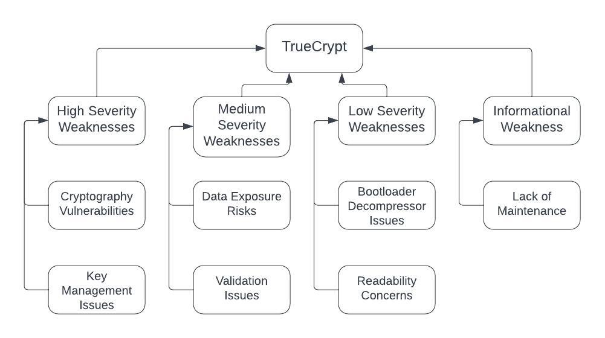

Secure Software Development
- Unit 1: Introduction to Secure Software Development
- Unit 2: UML Modelling to Support Secure System Planning
- Unit 3: Programming Languages: History, Concepts & Design
- Unit 4: Exploring Programming Language Concepts
- Unit 5: An Introduction to Testing
- Unit 6: Using Linters to Support Python Testing
- Development Team Project: Design Document
- Unit 7: Introduction to Operating Systems
- Unit 8: Cryptography and Its Use in Operating Systems
- Unit 9: Developing an API for a Distributed Environment
- Unit 10: From Distributed Computing to Microarchitectures
- Unit 11: Future trends in Secure Software Development
- Development Team Project: Coding Output
- Unit 12: The Great Tanenbaum-Torvalds Debate Revisited
- End of Module Assignment: e-Portfolio Submission
Unit 1: Introduction to Secure Software Development
Collaborative Discussion 1: UML flowchart Initial Post
Open source tools are available to create UML diagrams, some are listed below. This list is not exhaustive. The benefit of using such tools is that they ensure that the recognised UML components are used to represent the parts of the model correctly.
The OWASP coding weakness I will focus on is Cryptographic Failures (OWASP, 2021). Cryptographic Failures have been chosen by the OWASP as the second most significant security vulnerability due to their prevalence within web applications and the significant negative impact they can have. Cryptographic failures are when mistakes or weaknesses are made in how data is protected using encryption which means the data is easier for third parties to access. Examples of how this could happen is if sensitive data is sent in clear text over a vulnerable network or there is mismanagement of encryption keys and hackers are able to access them and use them to decode encrypted data (Sharma, 2023).
I believe an activity diagram would be a suitable choice because it focuses on the flow of activities, and provides a high-level overview of how tasks, decisions, and actions are interconnected. This means the activity diagram would effectively showcase the actions that could lead to a Cryptographic Failure and would clearly show the decision points that lead to a failure, as Cryptographic failures often involve decisions made by the developers, such as choosing an encryption algorithm or key generation method. Activity diagrams can also show parallel or concurrent activities, highlighting situations where multiple actions are happening simultaneously. This is important as there are multiple ways a Cryptographic Failure could occur and so an activity diagram allows this to be illustrated.

Figure 1. Activity Diagram for a Cryptographic Failure
References:
OWASP., (2021). OWASP Top Ten. Available at: https://owasp.org/www-project-top-ten/ (Accessed: 14 August 2023).
Sharma, P., (2023). A Deep Dive into OWASP Top 3 Security Risks.
Unit 2: UML Modelling to Support Secure System Planning
Scrum Security Review Blog Post
Some say that people are the biggest risk of cyber security.
Select five terms from ISO/IEC Standard 27000 Section 3 Terms and Definitions and write a 300-word blog post on how people can be managed to overcome cyber security attacks from the inside.
Cybersecurity is a complex challenge, and one key aspect is handling the human element to prevent insider threats. By understanding and applying important concepts from ISO/IEC Standard 27000 Section 3 Terms and Definitions, we can effectively address cybersecurity risks that come from within an organization.
- 3.69 Risk Management: Managing people within the context of cybersecurity means taking a systematic approach to understand and deal with risks. This involves identifying potential vulnerabilities, assessing how likely threats from within the organisation are, and understanding their potential impact. By understanding these risks, organisations can tailor their strategies to proactively tackle these specific internal threats.
- 3.53 Policy: Well-defined and clear security policies are the foundation for managing insider threats. These policies should outline expected behaviors, responsibilities, and the consequences of not following them. These policies serve as guidelines for employees, creating a culture of awareness and adherence to cybersecurity practices.
- 3.46 Monitoring: Continuous monitoring is crucial for quickly detecting and responding to insider threats. Using robust monitoring systems and technologies allows organisations to observe user activities, network traffic, and system behaviors. Identifying suspicious activities promptly minimises potential damage.
- 3.40 Likelihood: The likelihood of insider threats can vary based on factors like the organisation's industry, the type of data they handle, and the security measures in place. Understanding this likelihood is important for prioritising security efforts and allocating resources effectively.
- 3.15 Control Objective: Setting clear control objectives is essential for managing insider threats. These objectives define specific security goals and measures that need to be achieved. Control objectives can include user access controls, data encryption, and incident response plans, among other measures, to prevent and mitigate internal threats effectively.
By incorporating these concepts into their cybersecurity strategy, organisations can empower their employees to actively participate in defending against insider cyber threats. Educating employees, keeping them informed, and developing a security-conscious culture can make them an integral part of the solution, reducing the probability of internal attacks and enhancing overall cybersecurity. Ultimately, it's the collaboration between people and technology that can help organisations overcome internal cybersecurity challenges.
References:
OBP., (2018) ISO/IEC 27000:2018(en) Information technology – Security techniques, Information security management systems – Overview and vocabulary. Available at: https://www.iso.org/obp/ui/#iso:std:iso-iec:27000:ed-5:v1:en (Accessed: 22 August 2023).
Unit 3: Programming Languages: History, Concepts & Design
Collaborative Discussion 1: UML flowchart Summary Post
The feedback from my classmates on my post on cryptographic failures has added valuable insights to my initial post, offering different perspectives.
One of my classmates emphasised the importance of using an activity diagram to visualise the process and identify potential flaws. Additionally, they suggested delving deeper into the advantages of this approach.
Another classmate recommended enhancing the clarity of the diagrams by distinguishing between the perspectives of a hacker and a legitimate user. This approach would allow a better understanding of the processes the activity diagram showed. They also suggested exploring alternative UML diagrams, such as use case diagrams, to systematically identify potential vulnerabilities, which I think is a very valid point.
Another issue brought up was the aspect of effective encryption key management and other encryption-related issues which I hadn't considered.
Cryptographic failures, as outlined in my initial post are an important issue. They represent vulnerabilities in the systems' encryption mechanisms, posing a substantial risk to sensitive data. Understanding these vulnerabilities is important for enhanced security.
Activity diagrams are adept at representing the flow of actions, choices, and interactions within a system. They help in visualising the process, decisions, and activities that can lead to vulnerabilities. Furthermore, they can effectively depict parallel actions, which is critical as cryptographic weaknesses can occur along several pathways. This approach is in alignment with recommendations by Farooq (2022), who emphasises that activity diagrams can graphically illustrate the weaknesses and mistakes in the process by focusing on the decisions and activities that result in cryptographic failures.
When looking into cryptographic failures, we should also consider the impact and consequences. Ali (2023) has detailed potential implications of cryptographic failures, including data breaches, a decline in trust, legal and compliance issues, and intellectual property theft. These consequences show the urgency of addressing cryptographic vulnerabilities and implementing effective preventive measures.
References:
Ali, Z. (2023). Cryptographic Failures: Understanding the Pitfalls and Impact. [online] Available at: https://www.linkedin.com/pulse/cryptographic-failures-understanding-pitfalls-impact-zahid-ali/
Farooq, A. (2022). Threat modelling with UML for cybersecurity risk management in OT-IT integrated infrastructures. [online] Available at: https://core.ac.uk/download/pdf/521288263.pdf
Team Discussion: What is a Secure Programming Language?
You should read Chapter 2,6,7,8 of the course text (Pillai, 2017) and Cifuentes & Bierman (2019) and then answer the questions below, adding them as evidence to your e-portfolio.
- What factors determine whether a programming language is secure or not?
- Support for secure coding practices: A secure language should provide features and constructs that make it easier for developers to write secure code.
- Handling of common security vulnerabilities: It should address the causes of common and significant vulnerabilities found in real-world software, such as buffer overflows, injection errors, and information leaks.
- Memory management: The language's memory management mechanisms should prevent vulnerabilities like buffer overflows.
- Type safety: Type safety mechanisms can help prevent certain types of vulnerabilities.
- Security libraries: Availability of security libraries and tools for encryption, authentication, and access control.
- Community support: A strong community that actively addresses security issues and provides security patches.
- Could Python be classed as a secure language? Justify your answer.
- Python would be a better language to create operating systems than C. Discuss.
Cifuentes & Bierman (2019) propose that a secure programming language should provide first-class language support to address common, significant vulnerabilities found in real-world software. They suggest that secure languages should address vulnerabilities such as buffer errors, injection errors, and information leak errors and should provide "first-class language support" to mitigate these vulnerabilities. These three vulnerabilities have been identified through analysis of the National Vulnerability Database (NVD). The presence of safe abstractions, mechanisms for preventing vulnerabilities, and proper handling of memory and data manipulation are key factors that determine whether a programming language is secure.
Factors that determine whether a programming language is secure include:
Mainstream programming languages, including Python, are considered inherently insecure because they do not fully address all these factors.
Cifuentes & Bierman (2019) argue that no mainstream programming language, including the ones commonly used today (such as Java, C, C++, Python, PHP, JavaScript, and Ruby) address all three categories of vulnerabilities: buffer errors, injection errors, and information leak errors. While Python is acknowledged to address certain vulnerabilities like buffer errors through managed memory, and some aspects of injection errors through taint tracking, it does not provide safe abstractions for preventing all the identified vulnerabilities.
Given this analysis, it could be argued that Python, like other mainstream languages, may not be fully classified as a secure language according to the authors' definition, which requires addressing all three categories of vulnerabilities. However, Python's focus on readability, ease of use, and its ongoing community efforts to improve security can contribute to writing secure code within the language.
Therefore, Python is not classed as a completely secure language. While Python has features and libraries that can be used to write secure code, it also has limitations and areas where it may not fully address security concerns. Python has been analysed for security vulnerabilities and found to have issues, particularly in areas like input validation, overflow errors, and web application security.
However, Python's security can be improved through careful coding practices, using secure libraries, and staying informed about security best practices. Python's community actively addresses security issues and provides updates, which is a positive aspect.
In summary, Python can be used to write secure code, but it depends on how it is used and whether developers follow secure coding practices. It may not be classed as a fully secure language, but it can be a secure choice when used correctly.
Python is not typically considered a suitable language for creating operating systems. Operating systems require low-level control over hardware and memory, which Python lacks due to its high-level nature. C, on the other hand, is commonly used for operating system development because it provides the necessary low-level features and control.
While Python is known for its simplicity and ease of use, these features are not well-suited for building the complex, performance-critical components of an operating system. C, with its close-to-hardware capabilities, is better suited for this purpose.
In summary, Python is not a better language than C for creating operating systems. Each language has its own strengths and is suited for different purposes, and the choice of language depends on the specific requirements of the project.
References:
Cifuentes, C. & Bierman, G. (2019) What is a Secure Programming Language? 3rd Summit on Advances in Programming Languages (SNAPL).136(3): 1 - 15.
Pillai, A.B. (2017) Software Architecture with Python. Birmingham, UK. Packt Publishing Ltd.
Codio Activity - Exploring Python tools and features
Part I
In this example, you will compile and run a program in C using the Codio workspace provided (Buffer Overflow in C). The program is already provided as bufoverflow.c - a simple program that creates a buffer and then asks you for a name, and prints it back out to the screen.
This is the code in bufoverflow.c (also available in the Codio workspace):
#include
int main(int argc, char **argv)
{
char buf[8]; // buffer for eight characters
printf("enter name:");
gets(buf); // read from stdio (sensitive function!)
printf("%s\n", buf); // print out data stored in buf
return 0; // 0 as return value
{
Now compile and run the code. To test it, enter your first name (or at least the first 8 characters of it) you should get the output which is just your name repeated back to you.
Run the code a second time (from the command window this can be achieved by entering ./bufoverflow on the command line). This time, enter a string of 10 or more characters.
What happens?
*** stack smashing detected ***: terminated
Aborted (core dumped)
What does the output message mean?
When you enter a string of 10 or more characters, the gets function writes those characters into the buf array, which has space for only 8 characters. This results in a buffer overflow.
Part II
Now carry out a comparison of this code with one in Python (Buffer Overflow in Python), following these instructions:
In the Codio workspace, you will be using the file called Overflow.py:
buffer=[None]*10
for i in range (0,11):
buffer[i]=7
print(buffer)
Run your code using: Python overflow.py (or use the codio rocket icon) What is the result?
IndexError: list assignment index out of range
Install pylint using the following commands:
pip install pylint Run pylint on one of your files and evaluate the output:
pylint your_file What is the result? Does this tell you how to fix the error above?
Running pylint will give the following error message:
Missing module docstring (missing-module-docstring)Pylint does not tell me how to fix the error as it is a logical error. Pylint is designed for developers to write clean code, it does not address logical errors.
Unit 4: Exploring Programming Language Concepts
Programming language concepts
Regex
The UK postcode system consists of a string that contains a number of characters and numbers – a typical example is ST7 9HV (this is not valid – see below for why). The rules for the pattern are available from idealpostcodes (2020). Create a python program that implements a regex that complies with the rules provided above – test it against the examples provided.
Examples:
- M1 1AA
- M60 1NW
- CR2 6XH
- DN55 1PT
- W1A 1HQ
- EC1A 1BB
import re
def validate_postcode(postcode):
# Define a regex pattern for postcodes
pattern = r'^[A-Z]{1,2}\d{1,2} \d[A-Z]{2}$'
# Use re.match to validate the postcode
if re.match(pattern, postcode):
return True
else:
return False
# Examples
postcodes = [
"M1 1AA",
"M60 1NW",
"CR2 6XH",
"DN55 1PT",
"W1A 1HQ",
"EC1A 1BB",
]
for postcode in postcodes:
if validate_postcode(postcode):
print(f"{postcode} is a valid UK postcode.")
else:
print(f"{postcode} is not a valid UK postcode.")
How do you ensure your solution is not subject to an evil regex attack?
This pattern is quite simple and does not include complex constructs that could be exploited for attacks. However, to further enhance security, I would apply input validation to ensure that the input data adheres to a specific format before using the regex pattern. Generally, it is good practice to keep regex patterns as specific as possible to minimise unintended matches and to avoid performance issues.
Read Larson (2018) and Weidman (n.d.) then answer the questions below, adding them as
evidence to your e-portfolio. You may want to complete this activity in conjunction
with
or after completing Seminar 2 preparation.
What is ReDOS and what part do ‘Evil Regex’ play?
What is ReDOS and what part do ‘Evil Regex’ play?
ReDoS, which stands for Regular Expression Denial of Service, is a type of cybersecurity vulnerability that can be exploited by crafting malicious regular expressions. It occurs when a specific input triggers a regular expression to execute in an inefficient manner, causing it to take an excessively long time to complete. This can lead to a denial-of-service attack, where the system becomes unresponsive or crashes due to the resource-intensive regex processing.
"Evil Regex" refers to the regular expressions that are intentionally designed to take advantage of this vulnerability. These malicious regular expressions are typically unbounded, meaning they can match an infinite number of strings under certain conditions.
What are the common problems associated with the use of regex? How can these be mitigated?
Common problems associated with the use of regex include several issues such as incorrect use of character sets, wildcards, and line anchors, which can lead to unintended matches or patterns that don't behave as expected. Tools like ACRE can help by analysing regular expressions and identifying potential issues or errors in patterns (Larson, 2018).
How and why could regex be used as part of a security solution?
Regex can be used in security solutions to identify and mitigate potential threats. It's effective for tasks like input validation and log analysis. Regex patterns can help detect and filter malicious inputs or patterns, preventing attacks such as SQL injections.
References:
Larson, E. (2018) Automatic Checking of Regular Expressions. Available at: http://fac-staff.seattleu.edu/elarson/web/Research/acre.pdf
Weidman, A. (n.d.) Regular expression Denial of Service - ReDoS. Available at: https://owasp.org/www-community/attacks/Regular_expression_Denial_of_Service_-ReDoS
Unit 5: An Introduction to Testing
Exploring the Cyclomatic Complexity’s Relevance Today
The Cyclomatic Complexity is commonly considered in modules on testing the validity of code design today. However, in your opinion, should it be? Does it remain relevant today?
In my opinion, yes, Cyclomatic Complexity should be considered in code design and testing and I think it is still relevant today. It's a important way to assess code quality, maintainability, and testing needs. However, it should be used alongside other metrics and not as the sole determinant of code quality.
Specific to the focus of this module, is it relevant in our quest to develop secure software? Justify all opinions which support your argument and share your responses with your team.
Again yes, Cyclomatic Complexity is still relevant when it comes to secure software development. It's not a one-size-fits-all solution, but I think it holds a vital place in assessing code intricacy and its potential security risks. In the realm of secure software development, it's an important factor to consider, even though it's not the sole determinant of overall security.
Equivalence Testing in Python
Run equivalence.py in the Codio workspace - Testing with Python - which is an implementation of equivalence partitioning. This test partitions integers [-3,5] into equivalence classes based on lambda x, y: (x-y)%4 == 0.
In the output, you should be able to see how a set of objects to be partitioned are considered, and a function evaluates if the two objects are equivalent before printing the result.
test_equivalence_partition() produces the following output:
set([1, -3]) set([2, -2]) set([3, -1]) set([0, 4]) 0 : set([0, 4]) 1 : set([1, -3]) 2 : set([2, -2]) 3 :
set([3, -1]) 4 : set([0, 4]) -2 : set([2, -2]) -3 : set([1, -3]) -1 : set([3, -1])
You should carry out further investigations on the code and experiment with it.
Run with range [-3,5]:
{1, -3}
{2, -2}
{3, -1}
{0, 4}
-3 : {1, -3}
-2 : {2, -2}
-1 : {3, -1}
0 : {0, 4}
1 : {1, -3}
2 : {2, -2}
3 : {3, -1}
4 : {0, 4}
Run with range [-3,7]:
{1, 5, -3}
{2, -2, 6}
{3, -1}
{0, 4}
-3 : {1, 5, -3}
-2 : {2, -2, 6}
-1 : {3, -1}
0 : {0, 4}
1 : {1, 5, -3}
2 : {2, -2, 6}
3 : {3, -1}
4 : {0, 4}
5 : {1, 5, -3}
6 : {2, -2, 6}
Unit 6: Using Linters to Support Python Testing
Exploring Linters to Support Testing in Python
Question 1
Run styleLint.py in Codio. What happens when the code is run? Can you modify this code for a more favourable outcome? What amendments have you made to the code?
It results in an indentation error. I added the indentations to get this code:
def factorial(n):
""" Return factorial of n """
if n == 0:
return 1
else:
return n*factorial(n-1)
Question 2
pip install pylintRun
pylinton pylintTest.py
Review each of the code errors returned. Can you correct each of the errors identified by pylint? Before correcting the code errors, save the pylintTest.py file with a new name (it will be needed again in the next question).
import string
shift = 3
choice = input("Would you like to encode or decode? ").lower()
word = input("Please enter text: ")
letters = string.ascii_letters + string.punctuation + string.digits
encoded = ''
if choice == "encode":
for letter in word:
if letter == ' ':
encoded = encoded + ' '
else:
if letter in letters:
x = (letters.index(letter) + shift) % len(letters)
encoded = encoded + letters[x]
else:
encoded = encoded + letter
if choice == "decode":
for letter in word:
if letter == ' ':
encoded = encoded + ' '
else:
if letter in letters:
x = (letters.index(letter) - shift) % len(letters)
encoded = encoded + letters[x]
else:
encoded = encoded + letter
print(encoded)
- Changed raw_input to input because raw_input is not available in Python 3, which I used because Codio was not working.
- Added .lower() to the choice input to ensure that the user's choice is converted to lowercase. This way, it's case-insensitive and more user-friendly.
- Properly indented the code blocks for encoding and decoding under their respective conditions.
- Added a check to ensure that characters that are not letters (like spaces and punctuation) are not encoded or decoded, and they are added as is.
- Made sure the shift wraps around within the valid range of characters by using % len(letters).
Question 3
pip install flake8Run
flake8on pylintTest.py
Review the errors returned. In what way does this error message differ from the error message returned by pylint? Run flake8 on metricTest.py. Can you correct each of the errors returned by flake8? What amendments have you made to the code?
flake8 returned less errors than pylint. pylint will return errors if the code is not formatted properly, but flake8 only returns code breaking errors.
# CODE SOURCE: SOFTWARE ARCHITECTURE WITH PYTHON
"""
Module metricTest.py
Metric example - Module which is used as a testbed for static checkers.
This is a mix of different functions and classes doing different things.
"""
import random
def fn(x, y):
""" A function which performs a sum """
return x + y
def find_optimal_route_to_my_office_from_home(start_time, expected_time, favorite_route='SBS1K', favorite_option='bus'):
d = (expected_time - start_time).total_seconds() / 60.0
if d <= 30:
return 'car'
# If d > 30 but < 45, first drive then take metro
if 30 < d < 45:
return ('car', 'metro')
# If d > 45 there are a combination of options
if d > 45:
if d < 60:
# First volvo, then connecting bus
return ('bus:335E', 'bus:connector')
elif d > 80:
# Might as well go by a normal bus
return random.choice(('bus:330', 'bus:331', ':'.join((favorite_option, favorite_route)))
elif d > 90:
# Relax and choose the favorite route
return ':'.join((favorite_option, favorite_route))
class C(object):
""" A class which does almost nothing """
def __init__(self, x, y):
self.x = x
self.y = y
def f(self):
pass
def g(self, x, y):
if self.x > x:
return self.x + self.y
elif x > self.x:
return x + self.y
class D(C):
""" D class """
def __init__(self, x):
self.x = x
def f(self, x, y):
if x > y:
return x - y
else:
return x + y
def g(self, y):
if self.x > y:
return self.x + y
else:
return y - self.x
- Indentation was fixed for consistent spacing.
- Missing colons after function and class definitions have been added.
- Syntax errors like – (dash) have been replaced with - (minus sign).
- Inconsistent spacing has been made consistent.
Question 4
pip install mccabeRun
mccabeon sums.py. What is the result?
("4:0: 'test_sum'", 1)
('If 7', 2)
Run
mccabeon sums2.py. What is the result?
("7:0: 'test_sum_tuple'", 1)
("4:0: 'test_sum'", 1)
('If 10', 2)
What are the contributors to the cyclomatic complexity in each piece of code?
In both sums.py and sums2.py, the primary contributor to cyclomatic complexity is the conditional block if __name__ == "__main__". This block adds to the complexity as it serves as a decision point to decide if the code inside it should execute.
Development Team Project: Design Document
Full Brief
For this assessment, you are advised to position yourself and your team as software system designers that will ultimately respond to a legitimate system user and a hacker.
You are required to firstly develop a secure application, for either one of a school (Falana et al., 2021), online retailer (D’Adamo et al., 2021), or the international space station (Pipikaite et al., 2022). The system’s capabilities should be tailored to the specific needs of the chosen domain.
Your team is expected to create a system design, describing how you will meet the requirements, and prepare this as a design document. In your document, you should detail the system requirements and assumptions influencing the design. You should identify the security challenges that the system has been designed to protect against. You should produce a minimum of two different UML designs which illustrate different views of the system, one of which should be a misuse case diagram (Pauli & Xu, 2005). You should also state the tools and libraries which you will use in your solution. You should describe how you are applying a solo developer (Pagotto et al., 2016) (Moyo & Mnkandla, 2020) approach to manage the project.
My Reflection
For our system we chose to implement a Learning Management System for a school. We chose to use Notion for our shared document was pivotal. It allowed us all to seamlessly contribute to our design document, make real-time edits, and provide feedback on each other's ideas. This tool not only enhanced our workflow but also gave a sense of unity within the team, especially when we were all working at the same time.
We didn't have rigid roles for this part of the project. We embraced the idea that each team member had a unique perspective to offer, and there were no strict boundaries in terms of who should handle specific tasks which allowed us all to work to the best of our abilities. I enjoyed working and talking with other classmates for this assignment, it is the first teamwork project I have completed during this MSc. This experience reinforced the idea that teamwork where everyone contributes is a good way to achieve shared goals and learn from eachother.Unit 7: Introduction to Operating Systems
What is an Ontology?
What do you understand about the ontology that has been presented for your reading this week?
Arnaut et al. explains that the adoption of Service-Oriented Architecture (SOA) is important for IT agility, but it presents a problem when establishing a service catalog. Existing ontologies,such as OWL-S and WSMO, have limitations. The study presented a versatile SOA ontology, with a focus on service catalog implementation during development and flexibility to encompass differenr service technologies. It is based upon existing ontologies.
Could you attempt to define an ontology that would be relevant to the system that you are designing for the summative assessment?
We are designing a Learning Management System, I would propose this ontology:
- User Roles and Permissions: This aspect defines the various user roles within the LMS, such as students, teachers and admin. It also outlines the specific permissions and access rights each role has within the system, ensuring that users can perform their designated tasks whilst maintaining data security.
- Course Structure and Content: This component includes the organisation of modules, assignments, and learning resources within the LMS. It outlines how courses are structured, including the order in which content is presented to learners.
- Assessment and Evaluation Methods: This part covers the types of assessments used within the LMS, such as quizzes, exams, projects, and grading criteria. It also defines how assessments are conducted, evaluated, and graded, as well as the associated feedback mechanisms for students.
References:
Arnaut, W., Oliveira, K. & Lima, F. (2010) OWL-SOA: A Service Oriented Architecture Ontology Useful during Development Time and Independent from Implementation Time, IEEE.
Unit 8: Cryptography and Its Use in Operating Systems
Collaborative Discussion 2: Cryptography case study: TrueCrypt Initial Post
TrueCrypt was a popular and well-respected operating system add-on that could create encrypted volumes on a Windows and/or Linux system. In addition, it was also designed to create a complete, bootable volume that could encrypt the entire operating system and data for a Windows XP system. It was discontinued in 2014.
Case Study: Read the TrueCrypt cryptanalysis by Junestam & Guigo (2014) (link is in the reading list) and then answer the following questions:
- The (anonymous) TrueCrypt authors have said “Using TrueCrypt is not secure as it may contain unfixed security issues” (TrueCrypt, 2014). Does the cryptanalysis provided above prove or disprove this assumption?
- Would you be prepared to recommend TrueCrypt to a friend as a secure storage environment? What caveats (if any) would you add?
Present an ontology design which captures the weaknesses of TrueCrypt, and organise them according to their severity. Expand the ontology design by considering the factors which will cause each weakness to become an issue from a user's perspective. For example, if a user wishes to encrypt a disk storing bank details using TrueCrypt, which weakness of the software might cause this specific user goal to be negatively impacted?
The cryptanalysis report by Junestam and Guigo in 2014 supports the statement made by the anonymous TrueCrypt authors that "Using TrueCrypt is not secure as it may contain unfixed security issues." The report identified 11 vulnerabilities in TrueCrypt, which means the software has various weaknesses. These vulnerabilities were catergorised into different severity levels, with four being of medium severity, four of low severity, and three informational ones.
However, the report didn't outrightly say thst TrueCrypt is entirely insecure but it can be implied by the 11 vulnerabilities within the software that it does not have robust security measures. Its practical implementation had weaknesses that could make it vulnerable to certain attacks and unpredictable outcomes.
Taking this into consideration, alongside the discontinued state of TrueCrypt, I would not recommend it to a friend as a secure storage environment with or without caveats, even though more recent analysis by Sachdeva, Raina and Sharma in 2020 give some suggestions on how to increase its security. Rather I would suggest alternative, actively maintained encryption solutions that are designed to meet modern security standards and adapt to emerging threats.
The following ontology organises the weaknesses of TrueCrypt by severity (Miao, 2010, Sachdeva et al., 2020):
Factors which will could cause weaknesses from a user's perspective include:
- Data Sensitivity: The level of sensitivity of the data being protected, such as bank or medical details, will affect the importance of these weaknesses. Users with highly confidential information are at a higher risk.
- User Expertise: The user's technical skills will play a role in the impact of TrueCrypt's weaknesses. Less technically experienced users may struggle with key management and validation issues.
- Use Case: The intended use of TrueCrypt, for example, full-disk encryption, will affect the relevance of bootloader decompressor and readability issues. Users with this use case may experience significant disruptions if these weaknesses materialise.
- System Dependence: Users who depend on TrueCrypt for booting their entire operating system are more vulnerable to bootloader decompressor issues, which could mean their system is completely inaccessible.
- Long-term Security Consideration: Users should be aware that as of 2014 TrueCrypt is no longer maintained by its creators, which means there is an ongoing risk as hackers develop new strategies.
References:
Junestam, A. & Guigo, N. (2014) Open Crypto Audit Project Truecrypt Security Assessment.
Miao, Q.X. (2010) Research and analysis on encryption principle of truecrypt software system. The 2nd International Conference on Information Science and Engineering (pp. 1409-1412). IEEE.
Sachdeva, S., Raina, B.L. and Sharma, A. (2020) Analysis of digital forensic tools. Journal of Computational and Theoretical Nanoscience, 17(6), pp.2459-2467.
Cryptography Programming Exercise
Read the Cryptography with Python blog at tutorialspoint.com (link is in the reading list). Select one of the methods described/ examples given and create a python program that can take a short piece of text and encrypt it.
Create a python program in Codio (you can use the Jupyter Notebooks space provided in the Codio resources section) that can take a text file and output an encrypted version as a file in your folder on the Codio system. Demonstrate your program operation in this week’s seminar session.
def reverse_cipher_encrypt(text):
return text[::-1]
def encrypt_file(input_file, output_file):
with open(input_file, 'r') as file:
text = file.read()
encrypted_text = reverse_cipher_encrypt(text)
with open(output_file, 'w') as file:
file.write(encrypted_text)
# Input file to be encrypted
input_file = "input.txt"
# Output file to store the encrypted text
output_file = "encrypted_file.txt"
# Encrypt the file
encrypt_file(input_file, output_file)
Answer the following questions in your e-portfolio:
- Why did you select the algorithm you chose?
- Would it meet the GDPR regulations? Justify your answer.
The Reverse Cipher is a simple and easily implementable encryption technique. It offers a basic level of confidentiality by reversing the order of characters, making the original text unreadable at first glance.
The Reverse Cipher is extremely simple and easily breakable. It only involves reversing the characters of the text and provides minimal security. It can be very quickly deciphered using basic techniques. It would not meet GDPR and any data encrypted using this technique would be at risk.
Unit 9: Developing an API for a Distributed Environment
Developing an API for a Distributed Environment
In this session, you will create a RESTful API which can be used to create and delete user records.
Using the Jupyter Notebook workspace, create a file named api.py and copy the following code into it.
from flask import Flask
from flask_restful import Api, Resource, reqparse
app = Flask(__name__)
api = Api(app)
users = [
{
"name": "James",
"age": 30,
"occupation": "Network Engineer"
},
{
"name": "Ann",
"age": 32,
"occupation": "Doctor"
},
{
"name": "Jason",
"age": 22,
"occupation": "Web Developer"
}
]
class User(Resource):
def get(self, name):
for user in users:
if(name == user["name"]):
return user, 200
return "User not found", 404
def post(self, name):
parser = reqparse.RequestParser()
parser.add_argument("age")
parser.add_argument("occupation")
args = parser.parse_args()
for user in users:
if(name == user["name"]):
return "User with name {} already exists".format(name), 400
user = {
"name": name,
"age": args["age"],
"occupation": args["occupation"]
}
users.append(user)
return user, 201
def put(self, name):
parser = reqparse.RequestParser()
parser.add_argument("age")
parser.add_argument("occupation")
args = parser.parse_args()
for user in users:
if(name == user["name"]):
user["age"] = args["age"]
user["occupation"] = args["occupation"]
return user, 200
user = {
"name": name,
"age": args["age"],
"occupation": args["occupation"]
}
users.append(user)
return user, 201
def delete(self, name):
global users
users = [user for user in users if user["name"] != name]
return "{} is deleted.".format(name), 200
api.add_resource(User, "/user/")
app.run(debug=True)
Question 1
Run the API.py code. Take a screenshot of the terminal output. What command did you use to compile and run the code?

python api.py
Question 2
Run the following command at the terminal prompt: w3m http://127.0.0.1:5000/user/Ann What happens when this command is run, and why?
{
"name": "Ann",
"age": 32,
"occupation": "Doctor"
}
The reason for this response is that in the API code, the GET request function accepts a "user" parameter, which corresponds to the "user.name" attribute within the array of user objects. When there is a match with a user's name, the API returns a response containing their details.
Question 3
Run the following command at the terminal prompt: w3m http://127.0.0.1:5000/user/Adam What happens when this command is run, and why?
"User not found"
This is because there is no Adam user, only James, Ann and Jason.
Question 4
What capability is achieved by the flask library?
Flask is a Python library that simplifies website development. It helps developers construct websites, web services, and web pages rapidly. It acts as a blueprint for a website, dictating how it should function and what it should display when visited. Flask is known for its simplicity and adaptability, allowing developers to structure websites according to their specific requirements. It's suitable for both small-scale projects and large ones. Flask's core function is to streamline website development, freeing up developers to concentrate on creating website features.
Unit 10: From Distributed Computing to Microarchitectures
Collaborative Discussion 2: Cryptography case study: TrueCrypt Summary Post
Unfortunately due to poor time management and work demands I submitted my initial post late and so I was not able to get peer feedback on it, but I read the posts of other classmates and decided to use that as a way to enrich my thoughts on the Cryptography case study.
In our discussion, the consensus seems to be that TrueCrypt, once a popular encryption software, is not a secure option for safeguarding sensitive data due to identified vulnerabilities and its discontinued status.
The main argument against using TrueCrypt lies in the findings of Junestam and Guigo's cryptanalysis report. This report identified 11 vulnerabilities in TrueCrypt, four of which were of medium severity, posing significant risks to data confidentiality and integrity. These vulnerabilities included weaknesses in encryption algorithms, data exposure issues, and limitations in handling data inputs. Additionally, the report pointed out potential flaws in TrueCrypt's cryptography functions, which could make it susceptible to brute force attacks. The lack of maintainability and outdated build tools further raised concerns, making it an insecure choice for modern data protection.
While some argue that TrueCrypt was not explicitly declared as insecure by the NCC audit and that it had a strong theoretical foundation, the consensus remains that the identified vulnerabilities and discontinued status outweigh any potential benefits. It's considered risky to entrust sensitive data to a system with no ongoing maintenance, leaving it susceptible to future security issues.
Furthermore, the fact that TrueCrypt is no longer maintained since its discontinuation in 2014 adds to the consensus against recommending it. Without ongoing support and updates, any security vulnerabilities that may emerge will remain unaddressed, increasing the risk over time. This lack of supportability also makes it an unwise choice for securing data in today's fast-evolving threat landscape.
Faceted Data
Read Schmitz et al (2016) article about faceted data.
- Do you think this is a good approach to protect systems from data leakage? What
are the pros and cons?
- Create a basic outline design of how you would create such a system in Python.
The approach described in the article offers an interesting way to enhance system security against data leaks by separating policy enforcement from code execution and closely monitoring data flow. On the plus side, this approach streamlines responsibilities, allowing policy creators to focus solely on crafting robust security policies, while programmers can concentrate on writing code. This clear division of roles appears logically sound and has the potential to make policy enforcement more efficient. Additionally, it allows for more adaptive and resilient security measures, enabling systems to respond effectively to evolving threats. However, it's important to note that implementing this approach may introduce complexity, potentially making system management more challenging. Training in policy languages may also be necessary for developers, and there's a risk of increased performance overhead due to added complexity. In summary, while the approach offers benefits, its practical implementation and management complexities might cause difficulties.
To create a Python system for enforcing security policies and tracking data flow, I would:
- Policy Definition: Define security policies specifying allowed and restricted actions.
- Data Flow Tracking: Implement data flow tracking mechanisms like logging or auditing.
- Code Execution Environment: Create a controlled environment for executing code.
- Integration: Integrate the code execution environment into the system.
- Testing: Thoroughly test the system for policy enforcement and data tracking.
- Documentation: Provide comprehensive documentation for system users.
- Security Measures: Implement security to protect against unauthorised access.
- Maintenance: Regularly maintain and update the system to adapt to changing policies and emerging threats.
Unit 11: Future trends in Secure Software Development
Debate: Microservices and Microkernels
Read Appendix A: the Tanenbaum-Torvalds debate in DiBona & Ockman (1999) then read Fritzsch et al (2019).
“Torvalds has been proven wrong and it only took nearly thirty years. Microservices and microkernels are the future.“
Post a message either agreeing or disagreeing with the above and give a justification (ideally with an academic reference) supporting your view.
Whilst there is a compelling argument for the future relevance of microservices and microkernels, I would have to disagree with the initial statement that "Torvalds has been proven wrong, and it only took nearly thirty years. Microservices and microkernels are the future."
Firstly, it's essential to consider that technology and the computing landscape have evolved significantly since the Tanenbaum-Torvalds debate in 1992. The systems and paradigms in place at that time were shaped by the hardware constraints of the era, which are vastly different from today's capabilities. As technology advances, our approach to operating system design and architecture may continue to change, and the future may hold innovations that we cannot foresee or predict.
Secondly, monolithic kernels like Linux have shown remarkable adaptability and resilience over the years (Abbott, 2011). Linux has grown to become one of the most widely used operating systems across various business areas. Its monolithic architecture has proven to be efficient and reliable in numerous real-world scenarios. While microkernels and microservices have their merits, they may not be universally applicable or suitable for all use cases.
Additionally, the debate between Tanenbaum and Torvalds occurred within a specific context. Today, we face different challenges, such as the growth of cloud computing and the increasing demand for high-performance applications. In some situations, monolithic architectures might still provide better performance and efficiency, and they may continue to coexist with microkernel and microservices architectures.
While microservices and microkernels offer compelling advantages, it's important to acknowledge that the future of operating system and application architecture is not a one-size-fits-all scenario. The choice between monolithic, microkernel, or microservices architecture should be based on the specific requirements and constraints of the application or system in question. The Tanenbaum-Torvalds debate was a snapshot in time, and the ever-evolving tech landscape means that different architectural approaches may find their place in different contexts.
References:
Abbott, D. (2011) Linux for embedded and real-time applications. Elsevier.
DiBona, C. & Ockman, S. (1999) Open Sources: Voices from the Open Source Revolution, 1st ed. Available from: https://www.oreilly.com/openbook/opensources/book/appa.html
Fritzsch, J., Bogner, J., Zimmermann, A. & Wagner, S. (2019) From Monolith to Microservices: A Classification of Refactoring Approaches. In: Bruel, J. M., Mazzara, M., Meyer, B. (eds) Software Engineering Aspects of Continuous Development and New Paradigms of Software Production and Deployment. DEVOPS 2018. Lecture Notes in Computer Science (11350). Springer.
Development Team Project: Coding Output
Evaluation of Final Project
Our final project largely meets the specifications outlined in our design proposal. However, there are some differences in the implementation, particularly in the use of Docker, which we felt was a valuable addition for deployment. We also did not use SQLAlchemy but instead uses PostgreSQL as it better suited our needs once we started developing the software.
Apart from that I believe our final project was closely aligned with our design proposal. We aimed to implement a Model-View-Controller (MVC) design which we did, and it ensured a clean and encapsulated architecture for the final code.
Another thing we were able to implement was Authentication and Role-Based Access Control (RBAC) with roles Admin, Teacher and Student, which we were able to do, and is the main focus of our final software. We also included password encryption using libraries such as bcrypt and session management to prevent unauthorised access to align with the security measures described in the design proposal. The design proposal identified security risks and vulnerabilities (e.g., broken access control, cryptographic failures) using OWASP Top Ten recommendations and proposed mitigations which we kept in mind when developing the code.
The design proposal also outlines user management which we were also able to implement. Admins can create, update, and delete users, as specified in the design proposal. Teachers can update student data and add assignments. Students can view their personal data and assignments, matching the design proposal.
Overall, I believe the software aligns well with our initial design and offers an effective Learning Management System (LMS) solution.
Unit 12: The Great Tanenbaum-Torvalds Debate Revisited
Microservices and Microkernels Debate
Read Biggs et al (2018) and Bucchiarone et al (2018) as examples of modern views and approaches to the Monolithic vs. Microservices/ Microkernel debate.
"The Jury Is In: Monolithic OS Design Is Flawed" by Biggs et al. (2018) and "From Monolithic To Microservices: An Experience Report from the Banking Domain" by Bucchiarone et al. (2018), provide comprehensive insights into the implementation of microkernels and microservices within distinct domains, each serving different purposes.
The articles discuss operating systems and banking software, which are very complex systems which require highly secure systems so microkernels and microservices are highly suitable architectural choices. These architectural paradigms are well-suited to address the unique challenges posed by such large services. Members of my group pointed out that other popular systems like Google, AWS and Spotify are microservices and their opinion is that microservices are the future.
References:
Biggs, S. Lee, D. & Heiser, G. (2018) The Jury Is In: Monolithic OS Design Is Flawed: Microkernel-based Designs Improve Security. Proceedings of the 9th Asia-Pacific Workshop on Systems (APSys '18). ACM 16:1–7.
Bucchiarone, A. Dragoni, N. Dustdar, S. Larsen, S.T. & Mazzara, M. (2018) From Monolithic to Microservices: An Experience Report from the Banking Domain. IEEE Software 35 (3):50-55.
End of Module Assignment: e-Portfolio Submission
Reflection on the Secure Software Development Module
Throughout this module, I've gained valuable theoretical knowledge that I'm eager to put into practice in my programming projects. The module kicked off with the formation of working groups and the creation of team dynamics through a working contract. In our team, we decided to prioritize open communication over strict roles, and I believe we successfully maintained that approach.
Our initial assignment, the Design Proposal, required us to create a secure repository that could identify security risks from the OWASP Top 10 list and propose effective mitigations. We opted to develop a Learning Management System (LMS) for a school. Working together on the design proposal was a collaborative effort, and we were pleased with the final grade. However, we could have managed our time more efficiently, as we missed the opportunity to receive feedback from our tutor before the submission deadline. Nevertheless, we submitted a well-crafted design document that earned us a merit.
The subsequent team task, the Coding Output, required us to transform our design proposal into actual code. This phase demanded careful planning and consideration. While some team members had more coding experience and took the lead in designing the code, others focused on meeting other project requirements. We divided tasks among team members to ensure everyone contributed effectively based on their skills. We chose GitHub for storing our repository and Git for source control. The project was completed on schedule, and I am happy with the final product. I believe we met expectations by delivering a functional product that remained true to the design proposal.
This project served as a valuable learning experience, especially in embracing new technologies and fostering effective teamwork. It underscored the importance of proactively distributing tasks and ensuring equal participation, leading to a more balanced workload and successful project completion.
Assessing the independent work I completed during the module, I think I have learnt a lot about secure software development concepts I had never considered previously. Up until now my focus has always been strictly on functionality when it came to software development, I had never attempted to implement any security because all my projects have been for private use, but this module has shown me that all professionally written software requires at least some security measures. This means that developing software with security at its core is an absolute necessity for all software developers. In today's ever-changing world of technology and the growing complexity of cyberattacks, embracing a security-focused mindset in software development is more important than ever. This emphasis on security is particularly significant when creating software for use in real-world scenarios, where any vulnerabilities can lead to extensive repercussions.
The concept of the secure software development life cycle (SDLC) has been discussed throughout the units. I can now appreciate the importance of considering security at every phase of software development, from design and architecture to implementation and testing. This approach makes sure that vulnerabilities are identified and mitigated early in the development process, reducing the risk of security breaches in production environments.
Furthermore, the module expanded my knowledge of the Agile development methodology. This broadened my perspective on software development, and I now understand that the choice of methodology can significantly impact the security and overall success of a project. The ability to critically evaluate these methodologies and select the most appropriate one for a given scenario is a skill that I intend to apply in my future projects.
In conclusion, the Secure Software Development module has been a pivotal step in my academic and professional journey. I always knew security was important but now I am equipped me with the knowledge and skills to address security concerns and I am more prepared me to work effectively in team environments. As I move forward, I am confident that the principles and practices I have learned in this module will guide me to become a successful and security-conscious software developer.
Word Count: 649